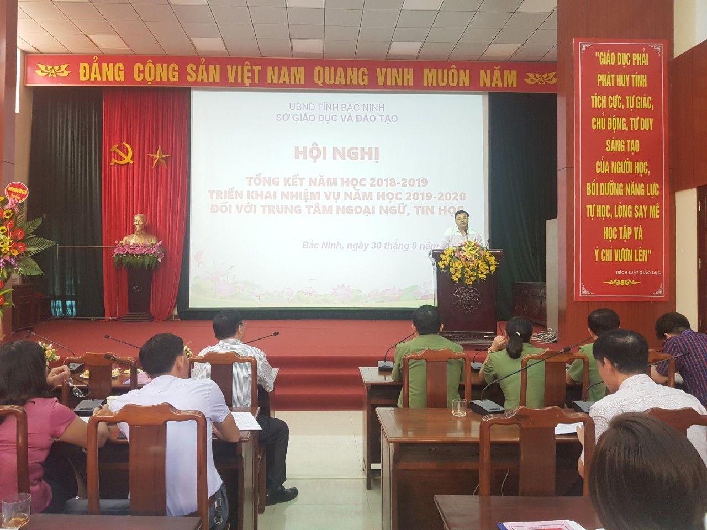
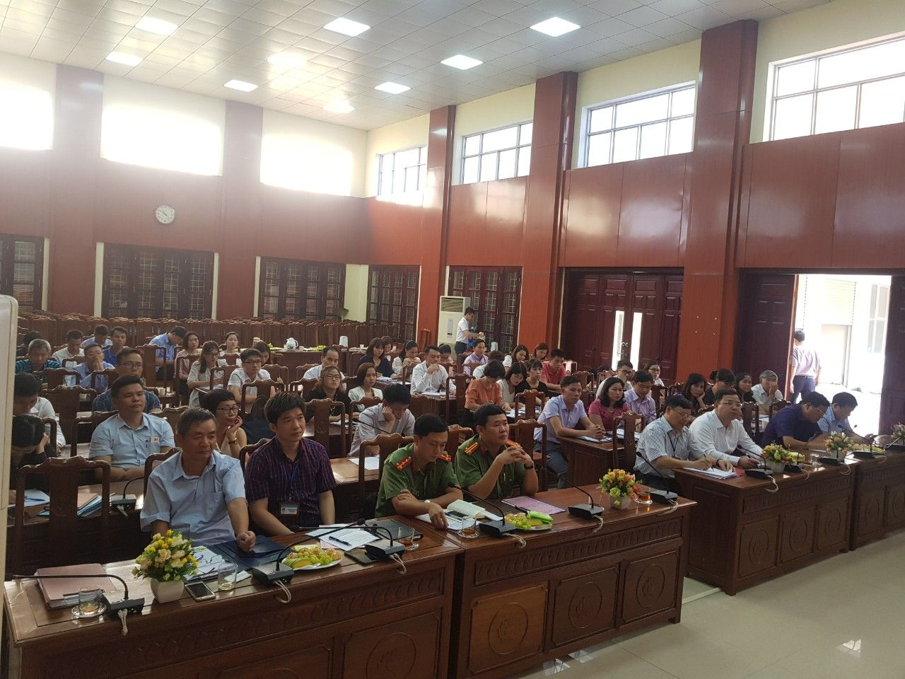
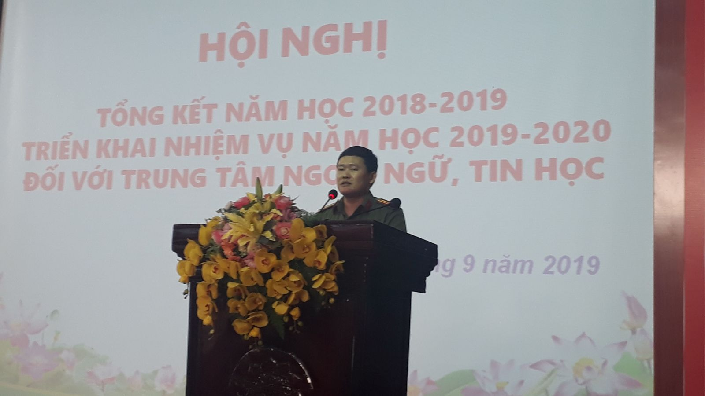
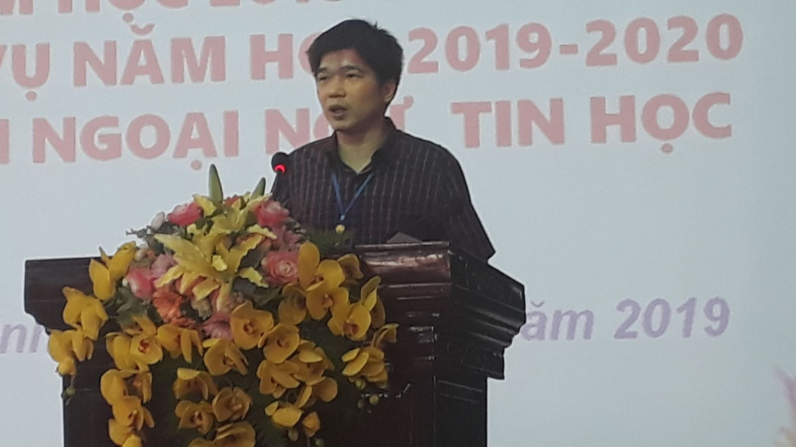

Tổng kết và tập huấn nghiệp vụ cho các Trung tâm ngoại ngữ, tin học
Ngày 30/9/2019, Sở Giáo dục và Đào tạo (GDĐT) Bắc Ninh tổ chức Hội nghị tổng kết năm học 2018-2019, triển khai nhiệm vụ năm học 2019-2020 và tập huấn nghiệp vụ cho các trung tâm ngoại ngữ, tin học trên địa bàn tỉnh.
Dự và chỉ đạo Hội nghị có đồng chí Nguyễn Thế Sơn - Phó Giám đốc Sở GDĐT; đại diện lãnh đạo các phòng: PA03, Xuất nhập cảnh thuộc Công an tỉnh Bắc Ninh; phòng việc làm, Sở Lao động, Thương binh và Xã hội, lãnh đạo các phòng chuyên môn của Sở GDĐT; lãnh đạo các phòng GDĐT các huyện, thị xã, thành phố; Giám đốc trung tâm ngoại ngữ, tin học các trường Đại học, cao đẳng, trung cấp trên địa bàn tỉnh; Chủ đầu tư và Giám đốc các trung tâm ngoại ngữ tin học do UBND tỉnh và Sở GDĐT ra quyết định thành lập.
Theo báo cáo, trong những năm qua, quy mô, mạng lưới trung tâm ngoại ngữ, tin học phát triển mạnh, tính đến 30/9/2019 trên địa bàn tỉnh có 51 trung tâm ngoại ngữ và tin học được thành lập và cấp phép hoạt động, trong đó: 46 trung tâm ngoại ngữ, 05 trung tâm ngoại ngữ và tin học. Hoạt động của các trung tâm đã góp phần nâng cao chất lượng dạy và học ngoại ngữ, tin học nói chung, hỗ trợ tích cực trong việc thực hiện đề án dạy và học ngoại ngữ; đáp ứng nhu cầu của học sinh, sinh viên, công chức, viên chức, người lao động, người dân và doanh nghiệp trên địa bàn. Hoạt động của các trung tâm ngoại ngữ, tin học cơ bản nền nếp, thực hiện đúng các quy định của pháp luật.

Đ/c Nguyễn Thế Sơn - Phó Giám đốc Sở GDĐT phát biểu chỉ đạo Hội nghị
Tại hội nghị, đồng chí Nguyễn Ngọc Lâm, trưởng phòng GDTX-CN, Sở GDĐT đã triển khai hướng dẫn cụ thể, giải đáp chi tiết các nội dung quy định tại Thông tư 21/2018/TT-BGDĐT ngày 24/8/2018 của Bộ Giáo dục và Đào tạo về Quy chế tổ chức và hoạt động của trung tâm ngoại ngữ, tin học tới các đại biểu. Bên cạnh đó, các ý kiến phát biểu tham luận của đại diện các trung tâm ngoại ngữ, tin học đã đề cập đến những khó khăn của đơn vị, các giải pháp thực hiện, kiến nghị đề xuất với các cơ quan quản lý để việc triển khai hoạt động của trung tâm đảm bảo hiệu quả và đúng quy định của Thông tư.
Tham dự hội nghị, đại diện Lãnh đạo các phòng: TCHC, Thanh tra thuộc Sở GDĐT, Công an tỉnh, Sở Lao động, Thương binh và Xã hội đã hướng dẫn, triển khai và giải đáp các nội dung về công tác quản lý, hồ sơ hợp đồng giáo viên người nước ngoài dạy tại trung tâm, đơn vị trường học, công tác thi đua khen thưởng và kiểm tra, thanh tra nhằm đảm bảo thực hiện đúng các quy định của pháp luật về hoạt động của trung tâm ngoại ngữ, tin học.
Phát biểu chỉ đạo Hội nghị, đồng chí Phó Giám đốc Sở GDĐT ghi nhận sự đóng góp tích cực của các doanh nghiệp, các trung tâm ngoại ngữ, tin học trong việc nâng cao chất lượng dạy và học ngoại ngữ, tin học trên địa bàn tỉnh; Sở GDĐT luôn tạo điều kiện thuận lợi để các doanh nghiệp thành lập Trung tâm ngoại ngữ, tin học và tổ chức hoạt động trên cơ sở đảm bảo đúng các quy định của pháp luật. Các ý kiến đề xuất của các trung tâm đã được trả lời cụ thể tới các đại biểu, đồng thời yêu cầu các phòng chuyên môn thuộc Sở GDĐT tiếp tục tham mưu xây dựng quy chế phối hợp trong quản lý hoạt động của các trung tâm ngoại ngữ, tin học; triển khai thực hiện tốt công tác thanh tra, kiểm tra; công tác thi đua khen thưởng. Phòng GDĐT các huyện, thị xã, thành phố tăng cường công tác quản lý, kiểm tra việc tổ chức hoạt động các trung tâm ngoại ngữ, tin học trên địa bàn.
Đối với các trung tâm cần thường xuyên rà soát, tăng cường đầu tư cơ sở vật chất, thiết bị dạy học hiện đại, quan tâm bồi dưỡng đội ngũ giáo viên, cán bộ quản lý; làm tốt công tác quản lý đội ngũ, quản lý lao động là người nước ngoài, thực hiện cam kết và công khai chất lượng đào tạo, đảm bảo tốt an ninh trật tự trên địa bàn,…Đồng thời, thực hiện chế độ thông tin báo cáo nghiêm túc, kịp thời./.
Một số hình ảnh:

Các đại biểu dự Hội nghị

Đ/c Nguyễn Văn Ổn, phó trưởng phòng PA03, Công an tỉnh Bắc Ninh phát biểu

Trưởng phòng việc làm, Sở Lao động, Thương binh và Xã hội tỉnh phát biểu